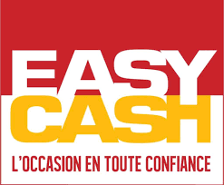

Mes experiences professionnelles
J'ai réalisé plusieurs petits jobs d'été comme serveur et commis pour un traiteur, agent d'entretien d'espace
vert.
Je suis aussi animateur au centre de loisir de la MJC de Palente pendant les vacances scolaires.
Je suis aussi animateur au centre de loisir de la MJC de Palente pendant les vacances scolaires.
J'ai réalisé une mission locale à Vital Été.

Mes stages
Pour mon stage de 3ème j'étais au magasin d'achat d'occasion et de revente EasyCash où j'ai rangé des DVD, créer
des étiquettes de prix et observer comment se déroulait le rachat d'objet d'occasion.


Lors de mon stage de fin de 1ère année de BTS, j'ai effectué mon stage dans le laboratoire ThéMA à l'UMLP en développement où j'y ai appris à utiliser le CMS Joomla pour refaire la page de publication du site de ThéMA ainsi que l'API Symfony pour implémenter un système de filtre et de graphique de statistique, j'ai aussi corriger les probleme de connection et de redirection du site de l'ISTA et j'ai refait le frontend du site d'Antiquité Avenir pour qu'il soit responsive et que l'organisation des menus soit plus armonieux